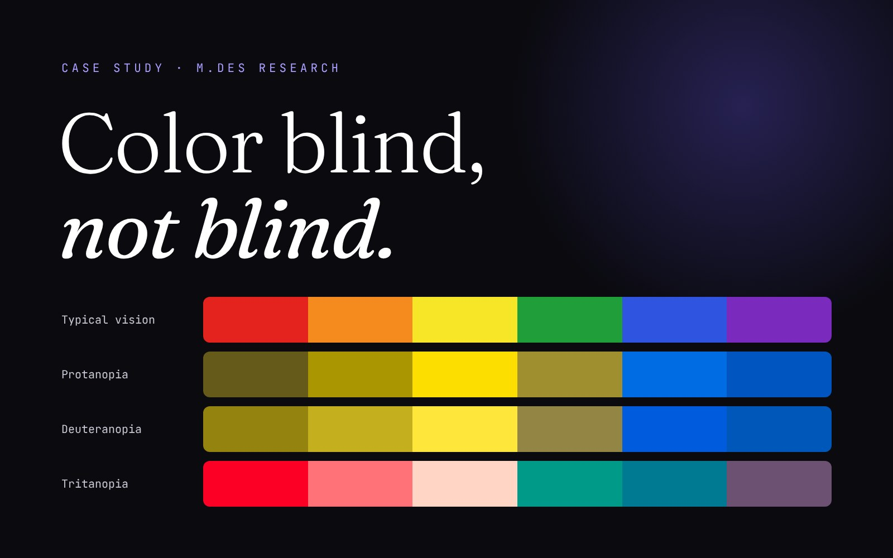

“I am color blind, not blind.”
That's how one participant in this study put it. An estimated 300 million people are color blind, and organizations and businesses often overlook them. I studied how they read visual media and advertising, then turned the findings into a design guide for the people who make it.

When color carries the message, some people miss it.
Designers use color to show what matters, what went wrong and what to do next. The studies I reviewed showed that color blindness can affect how people engage with visual advertising and how well they understand it.
Global estimates used in the study.
What I set out to do
- Investigate existing design practices and guidelines for color-blind consumers.
- Make people aware of how color-blind-friendly design affects commercial effectiveness.
- Identify the elements that help designers create inclusive design.
- Understand how a style guide would affect color-blind people using visual media.
I listened to both sides of the screen.
Color-blind people live with the problem. Designers decide how much of it they face. I needed to hear from both.
- 01Secondary researchI reviewed existing work on inclusive design and accessible visual advertising.
- 02Survey and interviewsI worked with 31 designers and 6 color-blind users to understand their mental models when creating or using visual media.
- 03SynthesisI analyzed the findings, mapped them into an empathy map and used them to propose solutions.
- 04Visual research and color simulationI used color simulators to understand which colors hold up, and built a color-blind-friendly palette from what I learned.
It shows up in small, ordinary moments.
The moments people described were ordinary: a color they got wrong, a client asking for changes, a game that became harder to follow.
The gap is invisible from the inside
“I don't know what other people see so I don't know the difference, everything looks normal to me.”
People can find out from someone else that a color isn't what they thought.
Give every color cue a second signal, so no one has to guess.It reaches into people's work
“Sometimes color grading which I do doesn't exactly seem ok, so clients ask for revisions.”
This participant edits video and asks a friend for help when colors become a problem.
Teach contrast and testing, so problems are caught before work goes out.Everyday interfaces fail quietly
“Games are a problem sometimes, since I get confused between the colored markers on different players.”
Website text, vehicle dashboards and color-coded game markers all came up.
Show each fix on real surfaces such as forms, charts and game tiles.The discussions pointed the same way. Organizations and businesses in India and other countries often ignore these difficulties, and designers need to understand them before they can design for them.
A design guide for inclusive visual media.
I proposed a guide that designers and advertisers could use in their daily work. It explains color blindness and inclusive design, then gives practical advice. A one-page poster presented the proposal, including a color-blind-friendly palette checked in protanope and deuteranope simulations.
What the guide covers
Its five core rules
- 01Don't rely on color alone.Pair color with a symbol or text wherever someone's attention is needed, as with an error message.
- 02Keep the palette small.Two or three colors leave fewer chances for confusion.
- 03Use patterns and textures.Charts stay readable when bars differ by more than color. Where possible, add text too.
- 04Choose contrast with care.Pick colors and hues that can be told apart with or without a color vision deficiency.
- 05Avoid risky pairs.Green with red, brown, blue, grey or black. Blue with purple or grey. Light green with yellow.
Switch how you see these examples.
Pick a type of color vision and everything in the panels below will change. In each pair, the left side uses color alone and the right side follows the guide.
Showing typical color vision.
Which field has the error?
Rule 1: don't rely on color alone.
Which bar is which?
Rule 3: use patterns and textures. Sample data.
The eight risky pairs
Rule 5: try each view and see which pairs start to merge.
The palette from my study
Blues, oranges and greys that stay apart in the red-green views.
These views use the Machado, Oliveira and Fernandes (2009) simulation model. They are approximations, and color vision differs from person to person.
The fix belongs in the default design.
“Colorblindness in my case is very normal now.”STUDY PARTICIPANT
The people in this study treat color blindness as an ordinary part of life. That's why I don't see accessible color as a special mode. A second signal, clearer contrast or a pattern on a chart can sit inside the main design, and the design doesn't have to look worse for it.
The same thinking shows up in my Canara ai1 redesign, where I lifted contrast from 1.37:1 to 5.98:1. If I took this study further, I'd test the guide with working designers and measure whether it changes what they make.